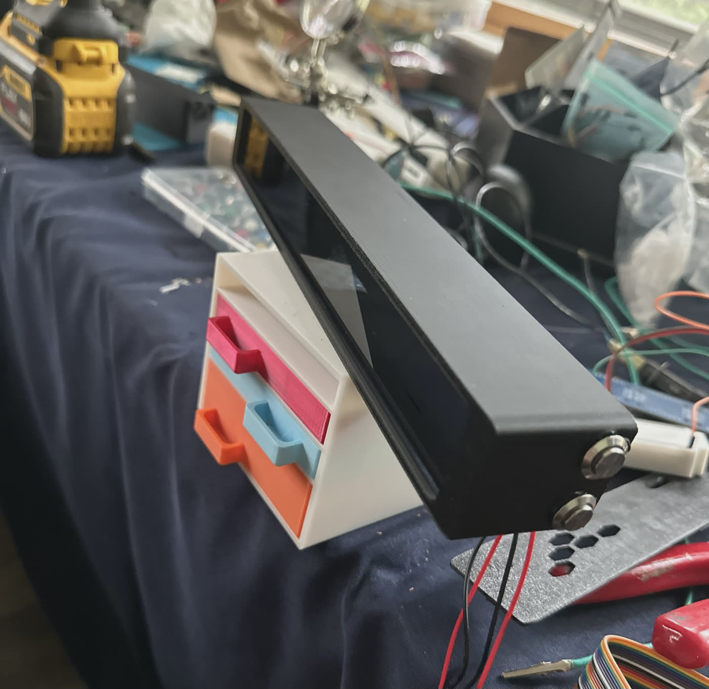

ESP32-Matrix
A desk display on an ESP32-S3 and eight LED matrices, in a case I designed and 3D-printed. It runs a stock ticker, a clock, a timer and games from three buttons.
Why I built it
I've always wanted to build things in hardware, not just software, but the learning curve kept me away. After my homelab, DJWYA and some 3D printing at school, it stopped looking scary. I have bigger hardware ideas, and I wanted to learn microcontrollers on something small first.
There was also a deadline. In July I was meeting my girlfriend's extended family in Egypt for the first time, and her father was hosting me. He already had everything he needed, so I wanted to give him something he couldn't buy.
That gave the project three goals: learn to program a microcontroller, learn to model a custom enclosure, and make a gift worth giving.
The build
It started on a breadboard: an ESP32-S3, two 4-in-1 MAX7219 boards (eight 8×8 modules chained into one 8×64 strip), and buttons and a buzzer from an electronics kit. The plan was a stock ticker. That worked quickly, so it grew into a clock, a timer and games.
The enclosure was one of the hardest parts. I measured every internal component and modelled a case to hold them, then printed it again and again. The displays didn't sit right, the buttons took too much room, or the board didn't fit. Each failure meant starting over, until one version held everything and the whole thing worked as intended.

What it does
-
Stock ticker
Scrolls price, change and percent change for chosen symbols from the Finnhub API, refreshed every five minutes in the background.
-
Clock
A 12-hour clock synced over NTP to the configured timezone, with digits that slide into place.
-
Timer with a custom alarm
A countdown up to 99:59. When it ends, the buzzer plays Egypt's national anthem. I converted the anthem from a MIDI file into note and duration data for the passive buzzer, using a small Python script.
-
Games
Tetris on a vertical playfield with a high score saved across reboots, a Stacker arcade game, and a reaction test that reports your time in milliseconds.
-
Setup without a laptop
On first boot the device opens its own Wi-Fi network with a setup page for Wi-Fi credentials, API key, symbols and timezone, then saves them to flash.
-
Three buttons, many gestures
Double-press for the next screen, five quick presses to switch the display off, and a five-second hold to wipe Wi-Fi settings. Each screen maps the left and right buttons to its own controls.
How it works
The firmware is a state machine with one state per screen. Network calls run in a separate FreeRTOS task on the chip's other core, so a slow API request never freezes the display. A mutex protects the ticker text that both cores share.
The flicker that wasn't power
When pixels moved quickly, the whole eight-module chain flickered, including the parts of the image that weren't changing. This is how I tracked it down:
- symptomThe whole strip flickers The flicker only showed up during fast motion, such as a falling Tetris piece or a busy animation. Static screens were fine.
- guessSuspected power Eight matrices draw a lot of current, so I lowered the brightness and tried a higher-voltage supply. Neither changed anything, which ruled power out.
- clueIt only happens when things move The display library pushes every change to the hardware immediately. Each frame blanked the entire chain and redrew it point by point, and fast motion meant many redraws.
- fixBuild the frame, then send it once I paused hardware updates, drew the full frame in memory, and sent it in one write. Then I applied the same pattern to every screen.
Two smaller hardware issues came up along the way:
- Current draw. At full brightness the matrices drew more than the board could comfortably supply. Brightness now runs at 1 of 15, which is still easy to read on a desk.
- Out of ground pins. A spare GPIO (15) is held low and used as the buzzer's ground. It works, but next time I'd add a proper ground rail.
Security & reliability
- Physical reset only. Wiping Wi-Fi settings takes a five-second button hold. Nothing can trigger it remotely.
- No over-the-air updates. Firmware goes on over USB, so changing it requires physical access.
- Password handling. The Wi-Fi password is masked in the setup form and never written to the serial log.
- Found while writing this up. I had committed a Finnhub API key to the public repo. An AI-assisted review flagged it, so I removed it and rotated the key. It's still in Git history, which is why rotating it was the real fix.
- Next. Password-protect the setup network, stop the setup page from pre-filling saved credentials, turn on TLS certificate checking, and pin library versions. When a quote fetch fails, the ticker currently shows simulated prices that look real; I'd label them clearly instead.
What I'd do differently
The firmware builds cleanly and runs all seven screens on the hardware. An AI coding assistant wrote the code. I built the hardware, diagnosed problems on the real device, and decided how the firmware should behave within the hardware's limits.
The AI produced working code quickly, but it shipped with certificate checking disabled and silent fake data, next to the key I'd committed. I didn't catch any of it until I reviewed the repo for this write-up. Next time I'd review generated code like any other change before it ships.
The habit I took away is methodical troubleshooting: rule out power before blaming the software, then document the fix so someone else can rebuild it. The repo's README has the full pinout, wiring notes and a troubleshooting table.
Stack
- hardware
- firmware
- network
- tools